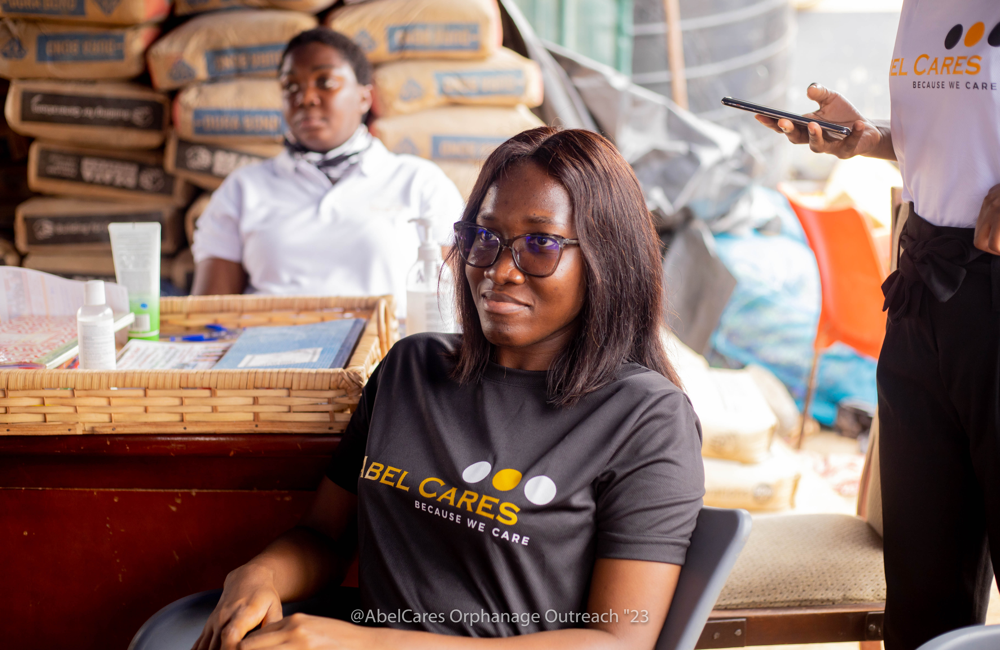
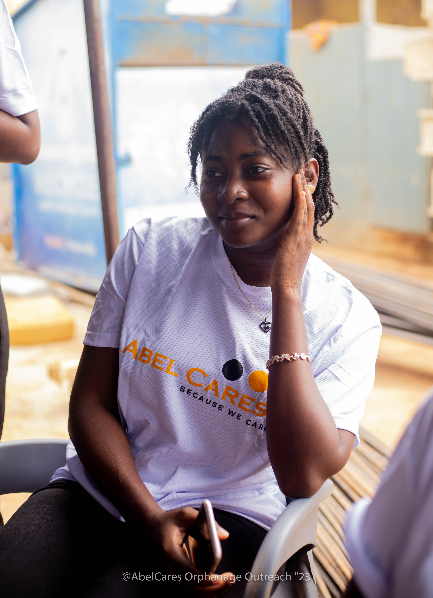
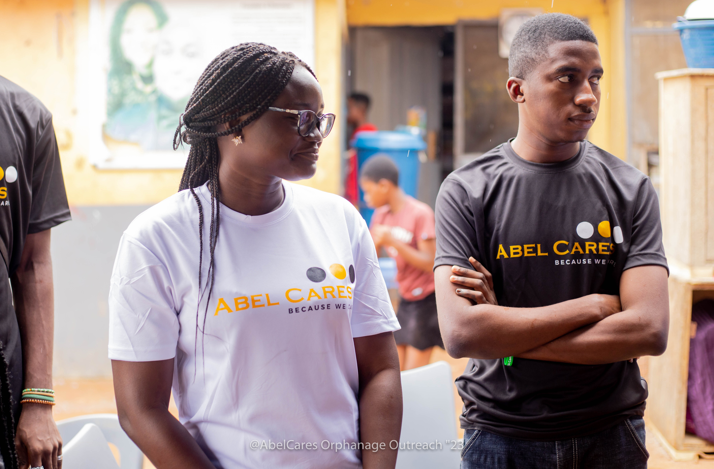
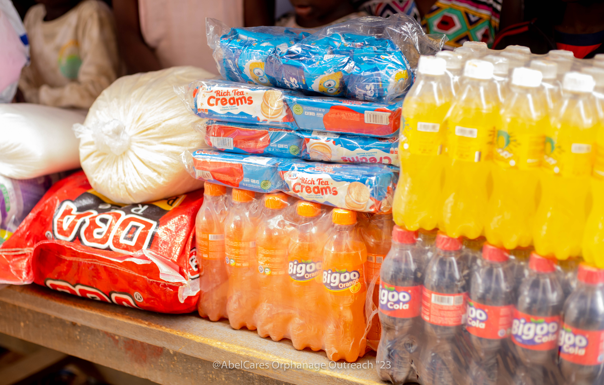
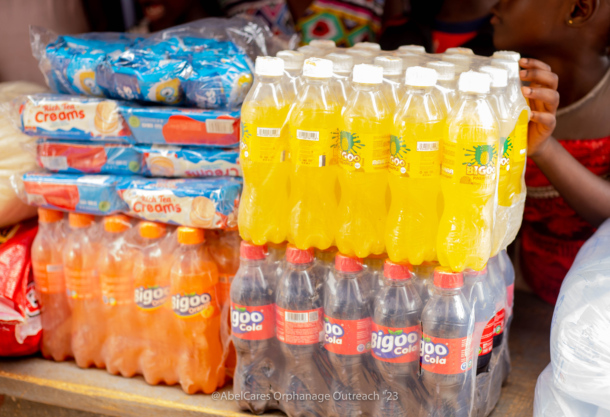
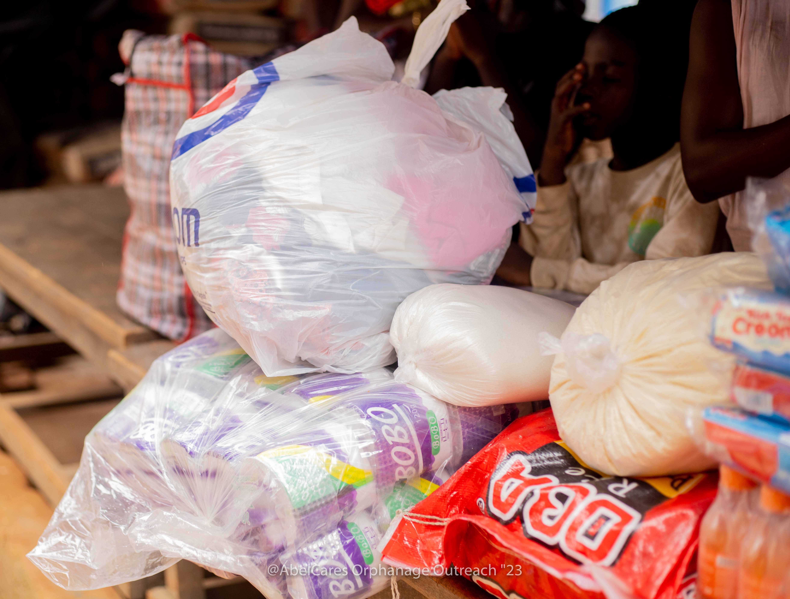
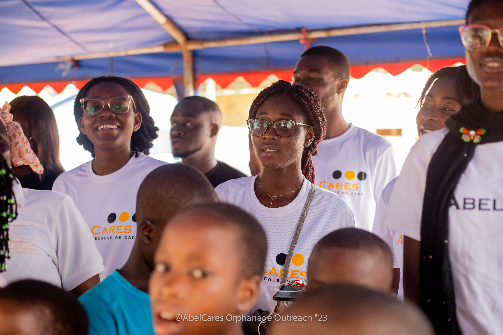

Transforming Education & Mental Health in Africa
Advancing youth education, mental well-being, and community resilience across Africa through evidence-based action.
School support, digital skills, and youth leadership.
Education, PAMHO Mental Health, and Social Impact.
Verified grassroots delivery and procurement records.
Pioneered in Ghana with continental reach.
Three Pillars of Sustainable Transformation
Directing human and financial capital across three high-impact domains for lasting transformation.
Equipping Africa's Emerging Generation
Equipping African youth with school supplies, AI literacy, and entrepreneurial tools.
Learn more
Confronting Stigma. Restoring Dignity.
Delivering community psychoeducation, caregiver wellness circles, and neurodiversity support through PAMHO.
Learn more

Direct Support for Vulnerable Communities
Providing eco-sanitation campaigns, clean water access, and emergency relief for communities.
Learn more

Direct Ground Action in Ghana







Evidence-Based Community Action
African development challenges require solutions grounded in cultural reality. We deliver evidence-based, youth-led community interventions.
"To build a world-class, youth-centered African organization that empowers young people, strengthens mental health systems, and advances sustainable development."Our Vision Statement AbleCares Initiative Africa
Accountability & Governance
Upholding integrity, transparent logistics, and verified impact for grantmakers and communities.
1. Transparent Field Logistics
Every financial pledge is tracked directly to verified field distributions in Ghana.
Learn more
2. Institutional Grantmaker Access
Open to bilateral MoUs, independent audits, and institutional site inspections.
Learn more
The ACI Africa Gazette
Field dispatches from our education, mental health, and social impact programs.